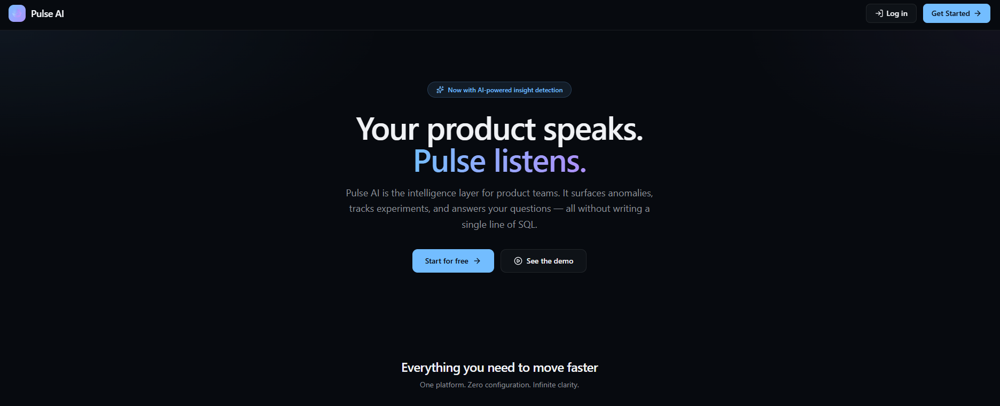
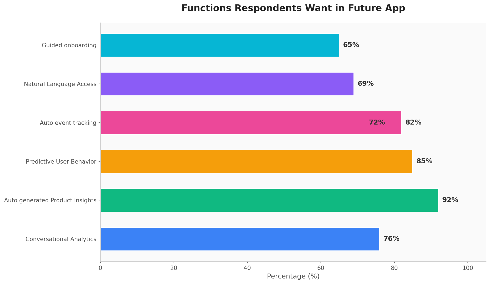
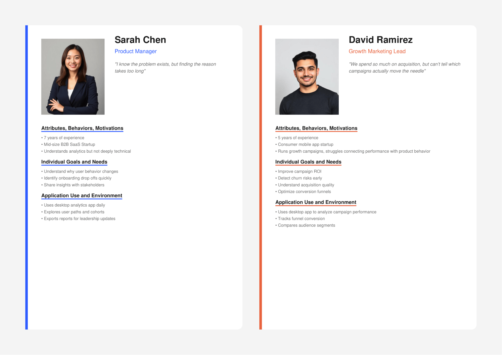
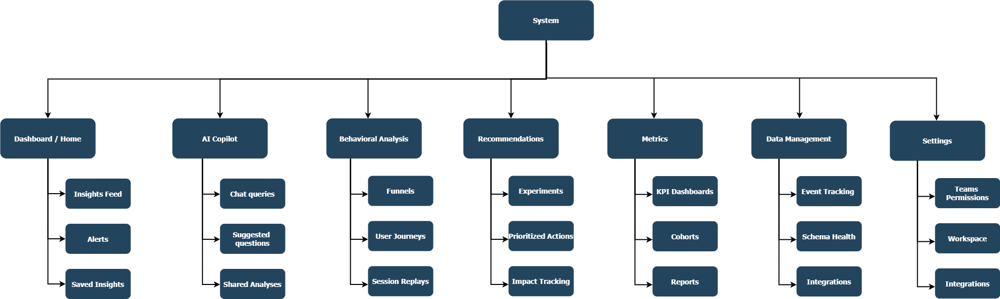
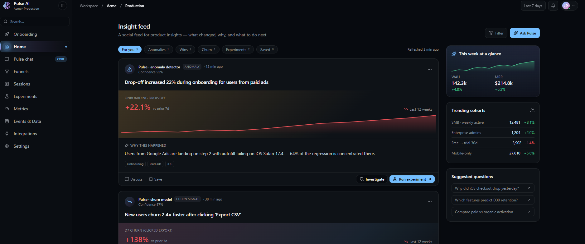
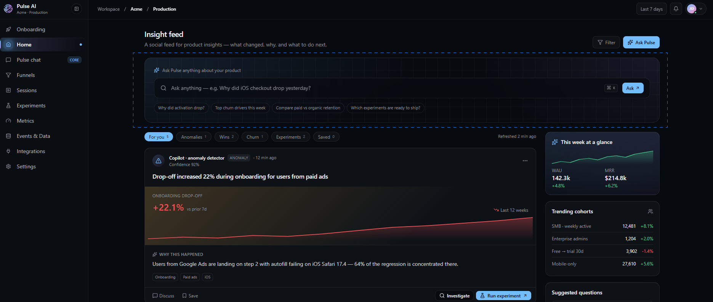
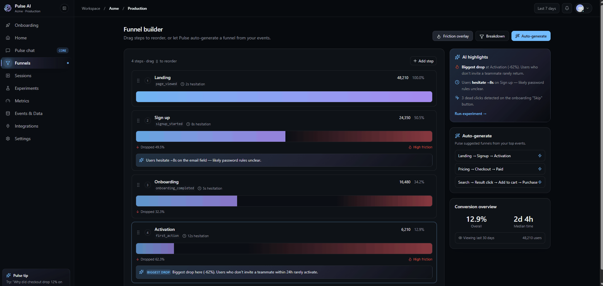

Pulse AI
I designed an AI Product Analytics Copilot to make analytics more conversational, explainable, and action-oriented.
The experience helps users to ask questions in natural language, investigate performance changes, and turn insights into next steps.

- Project Type
- Concept / Product UX / AI + Analytics
- Responsibilities
- Product strategy, UX concepting
- User flows, Wireframing
- Interaction design
- AI response patterns
- Explainability UX
- Role
- UX Researcher
- Lead UX Designer
- Timeline
- 8 weeks
- Platform
- Web Desktop Application
Intro
In practice, analytics is an iterative process that involves identifying stakeholders and success metrics, gathering and standardizing data from multiple sources, ensuring data quality, conducting exploratory analysis to uncover patterns and trends, and communicating insights through dashboards and reports.
Amplitude and Mixpanel are powerful product analytics platforms that help teams understand user behavior through dashboards, funnels, cohorts, and retention analysis. However, non-technical users often struggle to explore data independently and derive meaningful conclusions without analytical expertise. More importantly, these tools primarily explain what happened rather than what should happen next. While they provide insights and visualizations, they offer limited built-in recommendations or proactive guidance, leaving users to manually interpret findings and decide on actions. As a result, they function more as analytics dashboards than true copilot-style decision-support systems.
1. Skilled user with knowledge of Analytics: Even with self-serve analytics, users still need to know where to look, which chart to use, and how to interpret patterns. Mixpanel highlights interactive reports and self-serve insights, while Amplitude promotes complex analysis and AI agents, but that still assumes users can guide the process well.
2. Knowledge to transform findings into actionable recommendations: Competitors help identify drop-offs and friction through analytics and session replay, but users often still need to manually decide what to do next. Session replay explains behavior, but does not always convert findings into prioritized recommendations or product actions.
3. Analytics tools are far from being user friendly: Analytics tools are often easiest for analysts, PMs, or growth specialists. Designers, executives, and less technical stakeholders may still struggle to translate data into useful product direction.
GOAL
How might we simplify complex analytics so cross-functional teams can drive faster, more confident product decisions?
I independently researched the product analytics space over an 8-week period to design Pulse AI, an AI-powered copilot engineered to make complex data proactive, understandable, and action-driven for cross-functional B2B teams.
KEY RESEARCH INSIGHT
The First Few Minutes in the Dashboard Shape the Enterprise User Experience
I focused on front-loading my generative research in the first stage of my design process. I distributed a survey amongst 10 people and interviewed 5 potential users to gain a deep understanding of their goals and frustrations.

This research confirmed that enterprise users value intuitive design, especially in AI dashboards where complex insights must be understood quickly. Users often decide within the first few minutes whether to continue using a product, making clarity, trust, and easy navigation essential.
1. 67% of participants who are non- technical struggle to explore / understand data.
2. 45% use Amplitude, the most popular analytics tool, to analyze products.
3. 25% indicating they use more than one analytics tool which highlighted the need for an alternative.
4. 45% of participants wanted features like conversational analytics, auto - generated product insights and predictive user behavior.
SYNTHESIZING OUR INSIGHTS
Defining our PersonasI then synthesized my insights into a person. This would act as reliable and realistic representations of my audience segments that I could refer to while designing thus allowing me to always keep the user in mind.

COMPETITIVE ANALYSIS
Existing Applications lack action-oriented AI experience that helps teams to make product decisions.In my user research, I learned from users that the existing tool provides just analyzing data which is hard to understand for non-technical users. Keen to not make the same mistakes with my solution, I performed a competitive analysis of Amplitude, Mixpanel and Pendo. This gave me an opportunity to experience the extensive process first hand and made me realize the direction for the MVP - simplicity. This gave me an opportunity to experience the extensive process first hand and made me realize the direction for the MVP - simplicity.
To have my solution perform well as an MVP, simplicity would need to be adopted, and hence I prioritized ensuring there was a quick and easy AI generated product actions.


INFORMATION ARCHITECTURE
Designing the FamiliarTo ensure the MVP was within scope, I crafted four user stories to aid the creation process:
User Story 1: Discover a problem
As a Product Manager, I want the system to proactively surface important product issues, so I don't have to manually search through dashboards.
Scenario: Retention drops unexpectedly.

User Story 2: Investigate why drop-off happens
As a Product Designer, I want to understand where users struggle in a flow, so I can improve the UX.
Scenario: Checkout conversion is low.

User Story 3: Ask questions in Natural Language.
As a Product Manager, I want to ask product questions conversationally instead of building complex reports.
Scenario: Need churn insights.

User Story 4: Turn insight into experiment
As a Growth Analyst, I want recommended experiments based on detected problems, so I can improve metrics faster.
Scenario: Onboarding drop off detected.

SITE MAP

LOW FIDELITY WIREFRAMING
Bringing It All TogetherWith my user stories mapped out, I moved into the next phase of designing the application, starting with some rough sketches. I incorporated the best practices and existing design patterns to ensure the experience was user friendly and then digitized these wireframes for usability testing.

USABILITY TESTING
Involving the Users in the Design ProcessThe usability testing session with 3 participants was smooth, with us identifying 3 flaws. The majority of improvements made were on search bar, button placement, spacing inconsistencies, and text resizing.
There were one main adjustment needed:
Change
Users were more interested in Search functionality. They took time to find the search bar. As a result, I placed the AI Search bar on the center before the insight feed and also placed the button on the right side instead of left side. so it was the first item the user would see.


BRANDING
Introducing a Visual Style GuideTo give our app a personability, I crafted a logo and style guide which would act as a constant reference when designing the high fidelity prototype of the app itself. This would ensure visual consistency and make the app look more professional.

THE LAUNCH
Introducing Pulse AI - a tool to make analytics more conversational, explainable, and action-oriented.Why spend hours navigating dashboards and reports to find answers? A Product Analytics Copilot simplifies the entire analytics workflow by allowing users to ask questions in natural language, uncover insights, identify trends, detect anomalies, and receive actionable recommendations— all in one place. Designed for both technical and non-technical users, the copilot reduces the complexity of data exploration and transforms analytics from simply understanding what happened to knowing what to do next. The goal is to make data-driven decision-making faster, easier, and more accessible across the organization.
Easy onboarding experience with a guided demo that helps users connect and configure it through various integration options. It includes an insights feed that surfaces key analytics, AI-powered search trends, cohort and funnel analysis, and churn prediction models, enabling users to better understand customer behavior and performance. Users can also design, launch, and manage experiments through a simple, step-by-step workflow, making it easy to test ideas and optimize outcomes.

An AI-powered chat assistant provides contextual recommendations and direct links to relevant funnels, sessions, and dashboards, helping users quickly navigate to the right data. It also generates data-driven hypotheses and actionable insights based on observed trends and user behavior, enabling teams to identify opportunities, investigate issues, and make informed decisions more efficiently.

Pulse AI automatically generates meaningful funnels based on your event data, eliminating the need for manual setup. By analyzing your most important and frequently used events, it intelligently suggests relevant funnel paths that reflect actual user journeys. Users can quickly create, customize, and refine these AI-generated funnels to understand conversion behavior, identify drop-off points, and uncover optimization opportunities, making funnel analysis faster and more accessible for both technical and non-technical teams.

Pulse AI automatically creates role-based dashboards tailored for Product Managers, Designers, and Growth Analysts. Each dashboard highlights the most relevant KPIs, metrics, and insights, helping teams quickly track performance, identify opportunities, and make data-driven decisions without manual setup.

IMPACT
Future Enhancements
1. Predictive Analytics: I would like to bring predictive analytics in this product in the future which helps to predict what will happen. This will make the product feel more like an AI Strategist.
2. Autonomous Insight Agent: AI proactively investigates problems like detecting anomalies, suggested fixes, and creates reports.
"I'm very excited about what you brought to the table. Great visual, user friendly, smooth and stylish AI application."
- Usability Testing Participant
Feedback on the design? Want to chat over coffee about enterprise apps? Find me on LinkedIn.